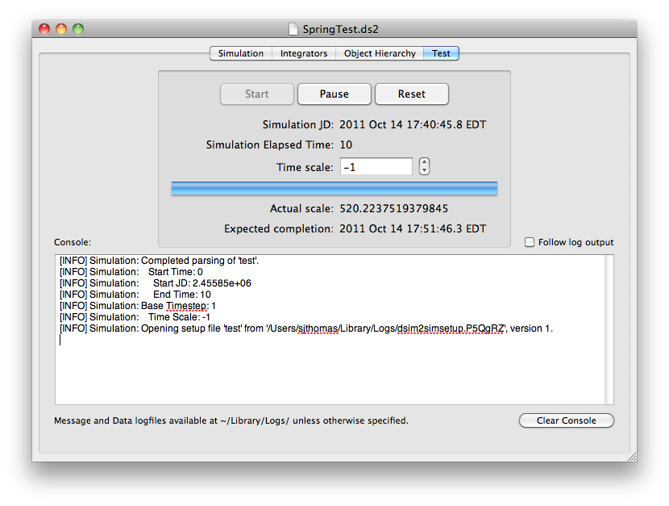

This tab is where you can run your simulation. Messages will be logged right to the console on this tab, as well as to any log files you specified in the Simulation tab. You must save any changes to the simulation before you can run it.
While the simulation is running, the elapsed time, time bar, actual time scale, and expected completion time will update continuously. The Pause and Reset buttons will be enabled when the sim is running and disabled otherwise.

If your simulation is printing a lot of messages, you may want the console to follow the output. After you have run the simulation once, hit Reset to be able to run it again.
Copyright 2011  , all rights reserved.
, all rights reserved.
Return to DSim Manager Help Home